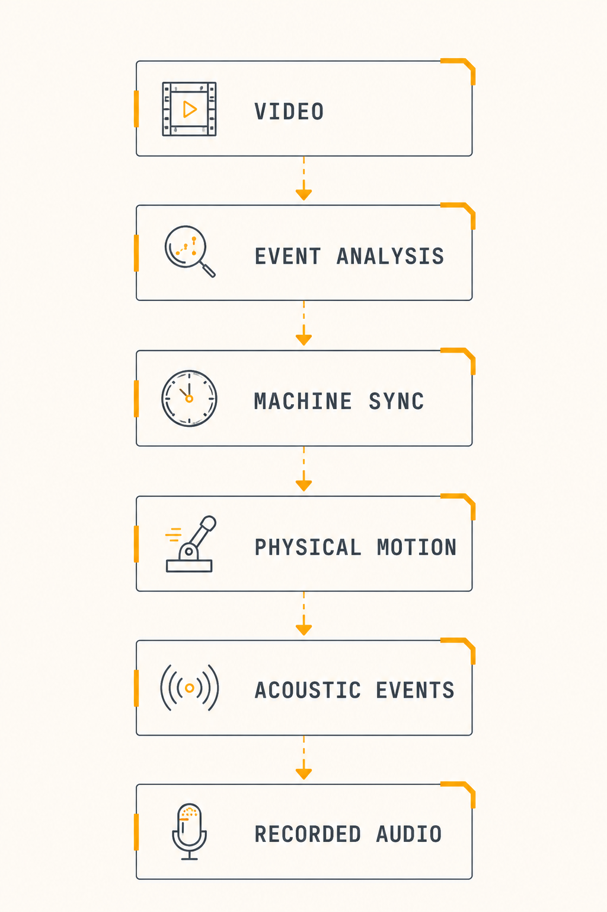

Real-time machine sync for mechanical sound generation
ABOUT
ROTOR TAXA explores new approaches to sound creation through programmable physical systems.
Rather than treating sound as a purely digital process, the project investigates how robotics, motion and mechanical interaction can become creative tools for audio production.
Through research, experimentation and functional prototypes, ROTOR TAXA develops methods for transforming physical movement into expressive acoustic events.
SYSTEM FLOW

CONTACT
Interested in collaborating or supporting the project?
📩info@rotortaxa.org
📞🇨🇴 +57 3208071195
Get in touch